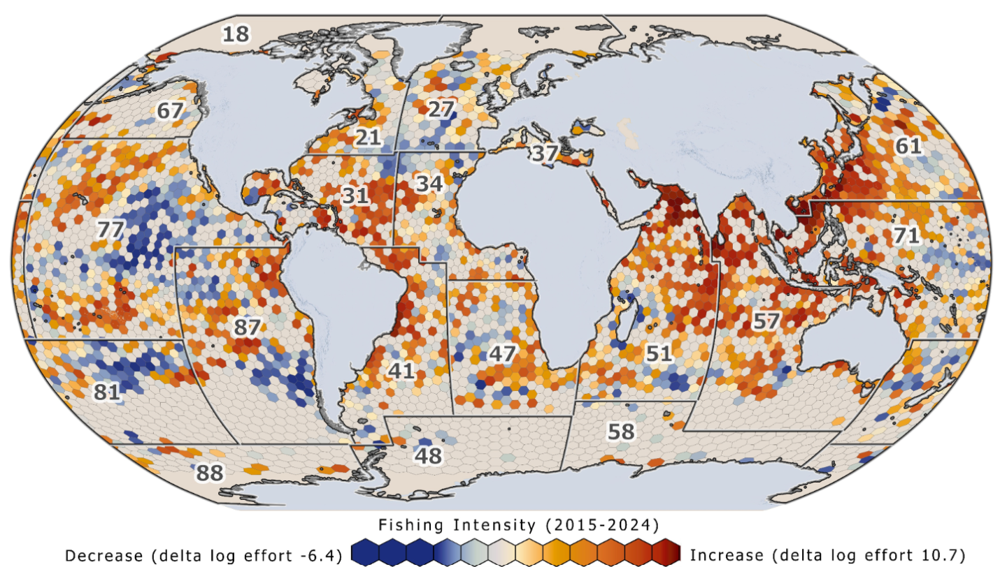
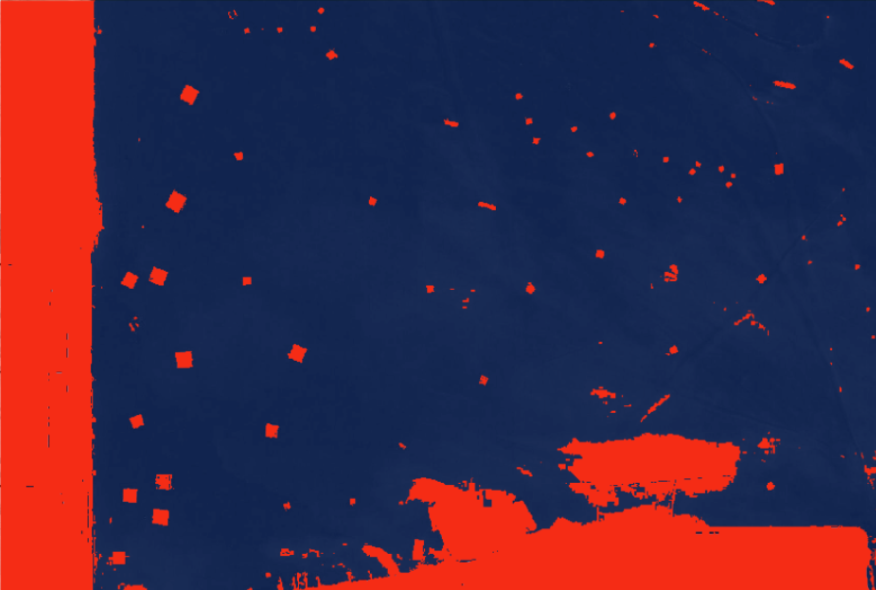
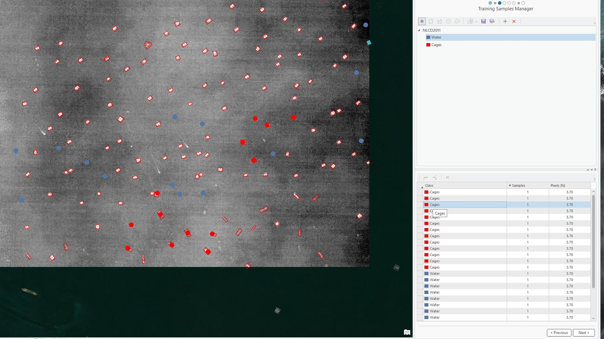
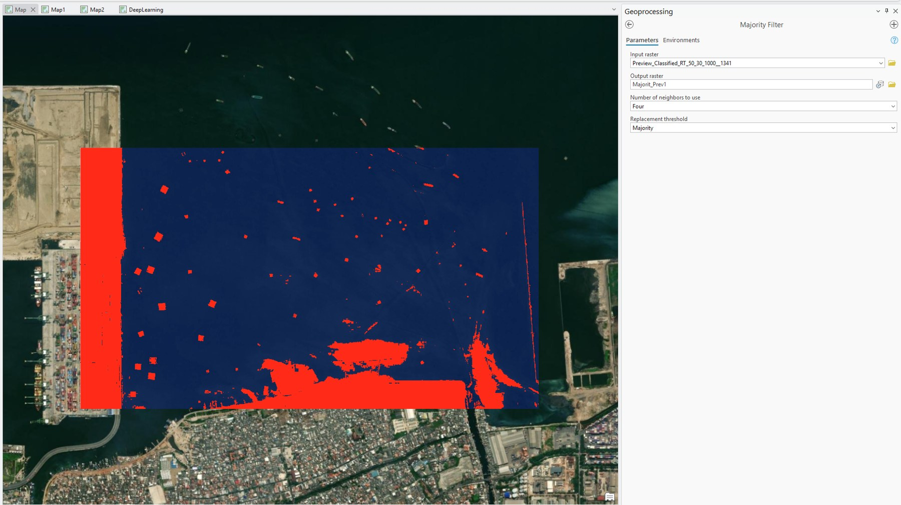
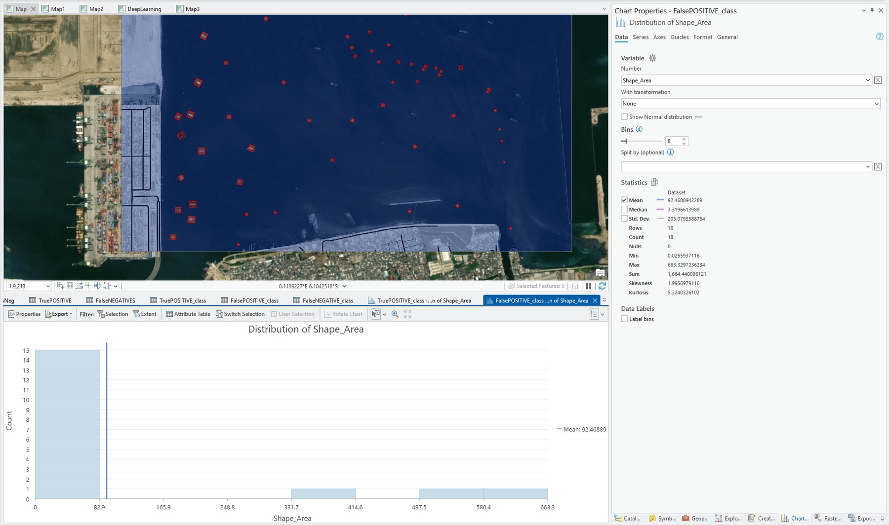
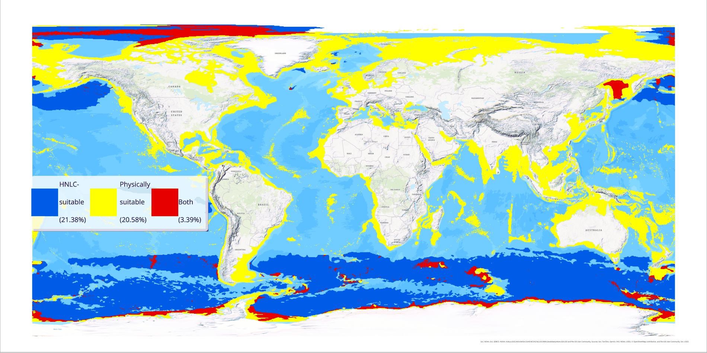
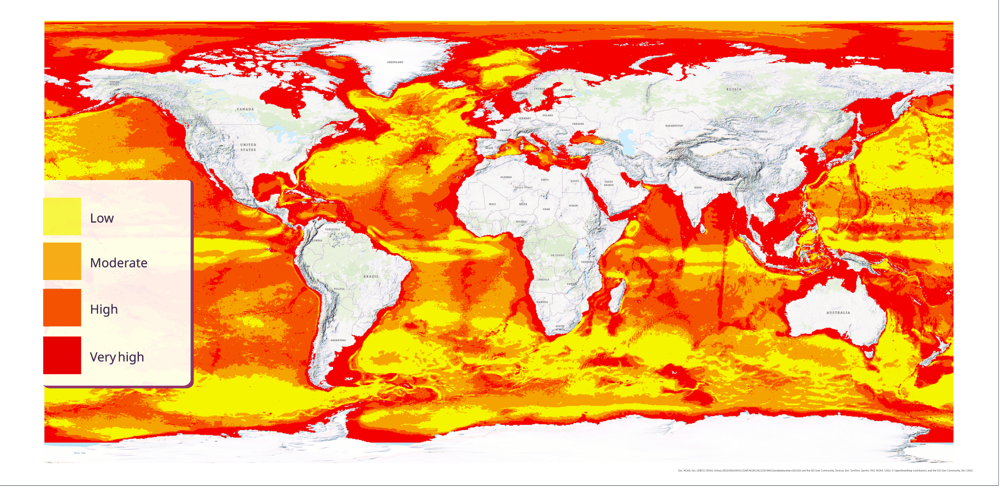
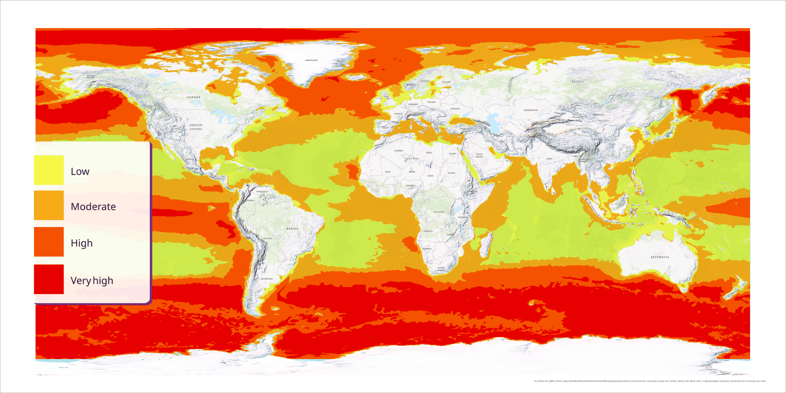
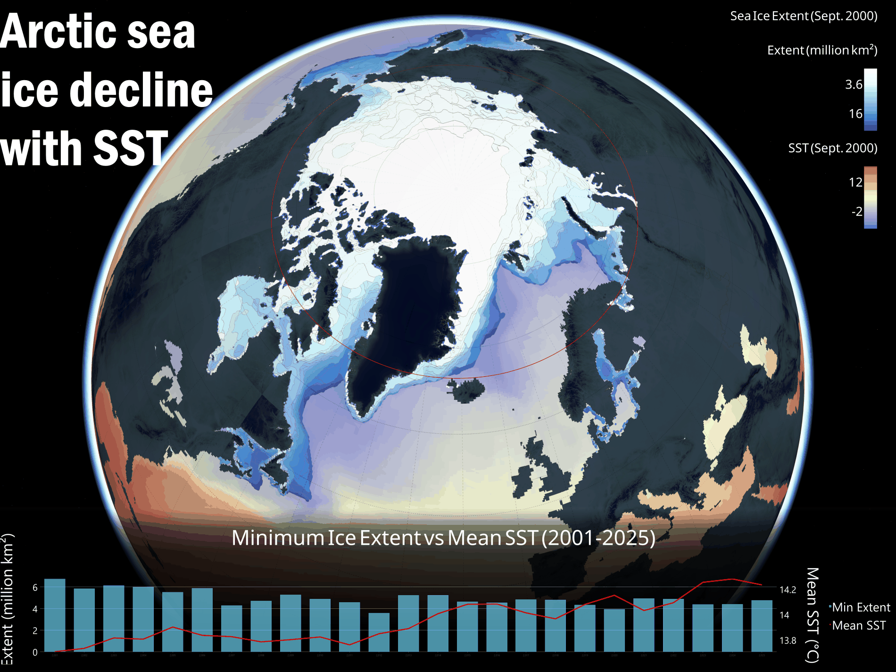

Oceans, Blue Foods, Remote Sensing, Machine Learning
Digital portfolio prepared for the Harvard Griffin GSAS Admissions Committee
Sophia very joyous to complete her MS degree in Stanford, CA. Photo credit: Phil Roberge
Profile
Sophia Siegel is a recent M.S. graduate of the Stanford Doerr School and an aspiring public health changemaker. Through a combination of technical science, communication, and creativity, she hopes to transform human-environmental systems to mutually benefit nature and underrepresented communities.
Sophia has relocated to Boston, MA, where she assists research at the Harvard Chan School of Public Health. Her key research interests revolve around food systems, blue foods, remote sensing, AI for Earth, natural capital, and the impacts of climate change on the Global South.
Field Notes from Palau | Navigating Ocean Policy. Now the most-viewed video of all time on the Stanford Woods Institute Youtube channel

Change in fishing intensity over time. Produced in ArcGIS Pro by Sophia Siegel and Diana Moanga

Using deep learning to classify cage and pond aquaculture in Jakarta Bay
Current Research Interests
Sophia's current work uses cutting-edge technology to measure our natural resources, with an emphasis on climate-driven health impacts in coastal regions. She is especially interested in harnessing satellite data to model global fisheries and monitor marine biogeochemical cycles with implications for food safety.
She currently collaborates with the Golden Lab's Planetary Health Research Group to distinguish harmful from non-harmful algal blooms and design early warning systems using machine learning.
At the heart of Sophia's work is a passion for working with communities to design solutions that serve policy and livelihoods.
Kronprins Haakon Polar Research Vessel, where Sophia will live and work from Feb-Mar 2027.
Miscellaneous
Sophia has represented Team USA Equestrian on World Cup and Nations Cup teams internationally, consistently ranking among the top showjumping athletes globally from 2021-2024. She retired from horse sport in 2025 to pursue a career in academia.
In February Sophia will accompany BOUVECO, a Norwegian Polar Institute-led expedition to Bouvetøya, the most remote island in the world! She'll conduct research that features hyperspectral satellite data to discern phytoplankton ecology.
Two ways of finding aquaculture cages in half-metre satellite imagery of Jakarta Bay, a Segment Anything model and a trained Random Trees classifier, scored by area overlap. Both find the cages; only one counts them.
A live map that puts California's official shellfish advisories next to NOAA C-HARM domoic acid forecasts, backed by a scheduled checker that logs every advisory issued or lifted.
Two global suitability indices for marine carbon removal — iron fertilization and ocean alkalinity enhancement — mapped on a common scale. Each covers about a fifth of the ocean. They overlap on 3.39% of it.
Five short studies in Google Earth Engine — classification and accuracy, thermal archives, cloud as a measurement, change detection two ways, and whether a city is really getting brighter. Scripts on GitHub.
A quarter century of September sea ice minima set against mean sea surface temperature, drawn as a dark polar globe with the two records charted beneath it.
No projects match that search yet — try clearing the filters.
Project reproduced from earlier work in 2026. Some original materials were lost, so this is a reproduction of the earlier project, rebuilt from the surviving notes and screenshots.
Detecting marine aquaculture cages in half-metre satellite imagery of Jakarta Bay, two ways, with an area-overlap accuracy assessment that scores either.
Written as a reproducible version of a 2026 ArcGIS Pro workflow that originally existed only as a click-path in a notes document.
Figure 1. Pan-sharpened SkySat imagery of the study area, 12 July 2025. Each small bright rectangle is a cage.
Why
Indonesia's Makan Bergizi Gratis programme will serve free meals to 82 million people by 2029, and farmed fish is the cheapest dense protein available to fill it. Jakarta is among the last major regions without a school meal programme, and planners need to know what the city already produces before siting cold storage and processing.
No current inventory of the cages moored off the coast exists. This pipeline is an attempt to build one from orbit.
Question: how many aquaculture cages sit off the coast of Jakarta, and can a general-purpose segmentation model find them reliably enough to scale the count across Java?
Short answer
Both methods find the cages. The trained classifier returns them one raft at a time; SAM returns them in clumps. For a count, that difference decides it.
Run it from the ArcGIS Pro Python Command Prompt, all at once or one stage at a time. Edit src/config.py first; the paths are placeholders.
propy src/run_pipeline.py --step all
propy src/run_pipeline.py --step sam
propy src/run_pipeline.py --step classify
propy src/run_pipeline.py --step accuracy
Data
Sensor
SkySat, pan-sharpened, via PlanetScope
Scene IDs
20250712_012455_ssc13d3_0006, ..._0007
Acquired
12 July 2025
Area of interest
Jakarta Bay, Tanjung Priok to Ancol (~3.8 km²)
Classifier
Random Trees, 50 trees, depth 30, 1000 samples/class
Deep learning model
Segment Anything Model (SAM), Living Atlas .dlpk
Imagery is not redistributed with the code. Planet scenes are available under Planet's research licence; the SAM package downloads from Living Atlas.
The original workflow
The ArcGIS Pro click-path as recorded in the 2026 project notes, which the scripted version was checked against.
Imagery preparation
Two pan-sharpened SkySat scenes from PlanetScope, acquired 12 July 2025. An earlier iteration georeferenced Google Earth screen captures against an imagery basemap using manual control points. That was abandoned in favour of the SkySat scenes, which carry their own geometry.
Method A: supervised pixel-based classification
Digitise a training feature class over cages visible in the area of interest, sampling a broad range of greys so the classifier does not lock onto a single brightness. Train water as well as cages.
Classification Wizard → Supervised → Pixel-based → Random Trees. Default schema, two classes. 50 trees, maximum depth 30, 1000 samples per class.
Merge classes.
Majority filter, three passes, Number of neighbors: Four, Replacement threshold: Majority. Four with majority is the conservative choice: three of four contiguous cells must agree before a value is replaced, which matters when the targets are only a few pixels across.
Raster To Polygon with Simplify off. The accuracy assessment is computed on polygon area, so vertex smoothing would alter the measurement.
Symbolise by grid code, select the cage class by attribute, and export to a new layer.
Residual noise inside the cage class was removed by lasso selection. That step is not reproduced in the scripts, because manual editing is not reproducible; the water clip in detect_sam.clip_to_water() addresses the same problem systematically.

Figure 2. Training samples in the Classification Wizard: cage polygons (red) and water points (blue) over the scene, with the class list at right. A broad range of greys is sampled for the cage class so the classifier does not lock onto a single brightness.

Figure 3. The classified raster with the Majority Filter pane open: input Preview_Classified_RT_50_30_1000__1341, four neighbours, majority threshold. The cages come out red, but so do the quay and shoreline around the bay; masking to water before classifying is listed under Next.

Figure 4. The accuracy assessment in ArcGIS Pro. The outcome layers (TruePOSITIVE, FalsePOSITIVE, FalseNEGATIVE) are scored as separate tables, and a histogram of polygon area for the FalsePOSITIVE_class layer shows mostly small features with a handful of much larger ones.
Method B: Segment Anything
Download the SAM model package from ArcGIS Living Atlas.
Analysis → Geoprocessing → Detect Objects Using Deep Learning.
Input the raster and point Model Definition at the .dlpk.
Adds padding around image tiles during inference. Helps prevent edge effects where objects are split across tiles.
64
batch_size
Number of image tiles processed in one batch. Affects speed versus memory use.
4
box_nms_thresh
Non-maximum suppression threshold to remove overlapping boxes.
0.70
points_per_batch
Number of prompt points sampled per batch for segmentation.
64
stability_score_thresh
Threshold on the predicted mask stability score.
0.90
min_mask_region_area
Minimum area for a detected object to be retained. Helps eliminate tiny artifacts or noise.
0
Accuracy assessment
The assessment scores area overlap rather than sampling a confusion matrix at points, which suits targets this small and this irregular. The reference covers the whole area of interest, not just the positives: a bounding box for the area of interest is unioned with the training polygons, and a trainingdata field scores 1 for features that came from a digitised cage and 0 for the bounding-box remainder, which is water.
All on area in square metres, not object counts. The input to the erase must be the trainingdata = 1 selection, not the whole union; see the bug described below.
Both methods find the cages. They disagree about what a cage is.
SAM's mean footprint is 5,637 m² against the pixel classifier's 29 m², roughly 200× larger, with its biggest single polygon at 110,928 m². It is segmenting cage clusters as single objects rather than resolving individual rafts.
For a map of where aquaculture happens, that is fine, and SAM gets there with no training data at all. For a count of cages, which is what the procurement question needs, it is the wrong unit, and no threshold change fixes it. The trained classifier wins on that question not because Random Trees beats a foundation model but because it was trained on this scene, at this resolution, for this target.
A bug worth documenting
SAM's false-negative layer, as originally exported, held 60 features summing to 2,844,274 m². One polygon accounted for 2,835,969 m² of that: 99.7% of the layer.
That polygon is the area-of-interest water body. It reached the false negatives because the erase ran against the whole reference union rather than the trainingdata = 1 selection. Water correctly left as water is a true negative; it cannot be a false negative.
Scored as exported, SAM's recall is 24.8% and its F1 is 39.6%. With the water polygon removed, recall is 99.1% and F1 is 98.8%. One mis-specified erase, and the conclusion inverts.
Precision is identical either way, at 98.4%, because precision never touches the false-negative layer, which is why the error survived until recall was computed.
metrics.check_dominant_feature() now runs against all three outcome layers and flags any layer where one polygon holds more than half the area. It catches this and the earlier true-positive variant of the same mistake. Both are pinned in tests/test_metrics.py.
On true negatives
They are recoverable here, and they should still not be reported.
The mislabelled polygon is essentially the true negative area, so TN = 2,835,969 − 15,156 = 2,820,813 m², implying an area of interest of about 3.78 km². From there, overall accuracy is 99.4% and specificity 99.5%.
Both numbers are dominated by empty sea. Classifying the entire area as water, finding zero cages, scores 74.6% overall accuracy, because that is simply the water fraction of the bounding box. Extend the box a kilometre further offshore and TN grows, overall accuracy climbs toward 100%, and nothing about the classifier has changed.
TN is a property of where the analyst drew the box. Precision, recall, F1 and IoU all exclude it for that reason, and IoU is the standard segmentation metric precisely because it does.
The exception, for completeness: if the area of interest were a defined management unit, such as a licensed aquaculture zone or a concession boundary, specificity would carry real meaning as false alarms per unit area of somewhere people care about. A bounding box around one's own training polygons is not that.
What these numbers do not prove
Stated plainly, because the figures look better than they are.
The validation set is not held out. The reference polygons are the same polygons the classifier trained on. Scores near 99% largely measure how faithfully the output reproduces its own training geometry, not how the method generalises to unseen coast. A real accuracy assessment needs independently digitised validation polygons, ideally from a second interpreter. accuracy.py --reference takes one.
Area is not count. Every metric here is computed on square metres of overlap. Neither method was scored on whether it found the right number of cages.
One scene, one day. A single July 2025 acquisition over one bay. Nothing here speaks to seasonality, to cages moved between acquisitions, or to the rest of Java.
A third run exists and is excluded. An earlier scoring pass returned 716 true-positive polygons totalling 3,272,405 m², one of which was 2,636,305 m² on its own: the same water-polygon mistake, in the true-positive layer instead. Its 99.9% precision is an artifact. It survives in tests/test_metrics.py rather than being deleted.
Parameter provenance
Not every parameter survived in the project notes. Each is tagged in src/config.py.
Parameter
Status
Value
Two-class schema (water, cages)
documented
—
Classifier
documented
Random Trees
Trees / depth / samples per class
documented
50 / 30 / 1000
Majority filter passes
documented
3
Majority filter neighbours
documented
FOUR
Majority filter threshold
documented
MAJORITY
Polygon simplification
documented
off
Overlay sequence (intersect/erase)
documented
—
Reference built by bounding-box union
documented
—
SAM padding
reconstructed
64
SAM batch_size
reconstructed
4
SAM stability_score_thresh
reconstructed
0.90
SAM box_nms_thresh
reconstructed
0.70
SAM points_per_batch
reconstructed
64
SAM min_mask_region_area
reconstructed
0
The classifier and its three hyperparameters come from a Classification Wizard preview layer named Preview_Classified_RT_50_30_1000__1341, captured in a Majority Filter geoprocessing pane in the project notes (Figure 3). RT is Random Trees; the numbers are the tool's first three numeric parameters in order. The trailing 1000 matches Esri's documented default for max_samples_per_class, which corroborates the reading. The majority filter settings come from the same pane.
Reconstructed values are Esri-documented defaults or reasonable choices, supplied so the pipeline runs end to end. The published figures above came from the original 2026 run, not from these values. Re-running SAM with them will produce different numbers.
A note on SAM's arguments: it takes a different set from the generic object-detection architectures: stability_score_thresh and box_nms_thresh, not the threshold and nms_overlap documented for SSD, RetinaNet and Faster R-CNN. Passing the generic names is ignored rather than raising, which is an easy way to think you have tuned something you have not.
Requirements
ArcGIS Pro 3.x with the Image Analyst and Spatial Analyst extensions
The Erase tool requires an Advanced licence
A CUDA GPU for SAM. On CPU, inference over a full SkySat scene is slow enough to be impractical
Python 3.9+ (ships with Pro). No third-party dependencies beyond arcpy; pytest only for the tests
src/
config.py all parameters, each tagged with provenance
arc_env.py extension checkout, workspace setup, logging
detect_sam.py Segment Anything detection + water clip
classify_pixels.py train → classify → filter → vectorise
accuracy.py overlay operations and reporting
metrics.py the arithmetic, arcpy-free and testable
run_pipeline.py CLI driver
tests/
test_metrics.py regression tests against the measured 2026 totals
docs/
methods.md the original click-path, for comparison
metrics.py is deliberately separate from accuracy.py so the arithmetic can be tested without a licence. The geometry needs ArcGIS; the division does not.
Next
Digitise an independent validation set over held-out coast and rescore both methods
Score on object count with centroid matching, not area overlap
Mask to water before classifying, which removes the dominant false-positive source at no analytical cost
Split SAM's merged cluster polygons, or accept it as an extent mapper
Extend to the 2020 archive for the change-detection question the original proposal set aside
Ocean alkalinity enhancement and iron fertilization are both place-dependent, and they depend on different places. Mapping each globally on the same 0–1 scale shows how little ocean satisfies both — and why the choice is where, not which.
Role
Analysis, modeling, cartography
Tools
ArcGIS Pro, Google Earth Engine
Extent
Global, single-year snapshot
Status
In progress

Figure 1. The two indices thresholded and overlaid. HNLC-suitable covers 21.38% of the ocean and physically suitable 20.58% — but only 3.39% qualifies for both.
The question
Marine carbon removal is usually argued in the abstract — whether a method works, not where. Ocean alkalinity enhancement adds alkaline material to surface seawater so the ocean draws down more CO2; whether it works at a site is a question of physics, namely how long that alkalinity stays in contact with the atmosphere. Iron fertilization is a question of biogeochemistry: it does something only where surplus nutrients sit unused for want of iron.
The headline result
Finding
Each index, thresholded, covers roughly a fifth of the world ocean — 21.38% HNLC-suitable, 20.58% physically suitable for alkalinity enhancement. Independence would predict about 4.4% overlap. They overlap on 3.39%.
The two are close to spatially disjoint and mildly anti-correlated. The cold, high-nitrate, deep-mixed Southern Ocean that suits iron is largely the water whose deep mixed layers and fast currents make it poor for alkalinity. These are options for different oceans.
Index 1 — Ocean alkalinity enhancement
The controlling variable is circulation, not chemistry. Alkalinity only draws down carbon while it stays in the surface layer; diluted or subducted, the uptake never happens. Guo et al. (2025), from Heather Kim's group at WHOI, make this explicit — releasing passive dye tracers in a circulation model and scoring sites on spread, retention, gas transfer, and residence time.
That cannot run globally without a global circulation model, so this index uses static proxies for the same physics: mixed layer depth (shallow better), wind speed (higher drives gas transfer), surface current speed (slower better), bathymetry (shelves over abyss), and distance to shipping. Layers from GEBCO, the Copernicus physical reanalysis, ERA5 winds, and global maritime traffic.

Figure 2. Physical suitability for alkalinity enhancement. Shelves and mid-latitude margins score highest; the deep-mixed Southern Ocean scores poorly despite being the flagship region for iron.
Index 2 — Iron fertilization in HNLC waters
Roughly a third of the ocean is high-nutrient, low-chlorophyll: nitrate sits unused because iron limits growth. Twelve mesoscale enrichment experiments synthesised by Boyd et al. (2007) showed unambiguously that adding iron triggers a bloom there, following Martin & Fitzwater (1988); Moore et al. (2013) map where each kind of nutrient limitation falls.
What those experiments did not establish is durable storage — most bloom carbon was remineralised near the surface rather than exported. This index marks where the biological precondition holds, not where sequestration would succeed. It combines high surface nitrate, low chlorophyll, and low dissolved iron, all from the Copernicus biogeochemistry reanalysis (GLOBAL_MULTIYEAR_BGC_001_029).

Figure 3. Iron fertilization suitability. The Southern Ocean, equatorial Pacific and subarctic North Pacific carry the signal — the same regions where the enrichment experiments were run.
Method
Each input is rescaled to a 0–1 membership surface with Fuzzy Membership — linear where more is better, inverted where less is, Gaussian for bathymetry where the optimum sits in the middle — then combined with Fuzzy Overlay. Building graded surfaces rather than threshold masks keeps visible how close each cell came to the cutoff; a binary map can still be produced afterwards, but the threshold stays an explicit choice.
Both indices are annual means for a single year, so seasonality is averaged out — a real limitation given that the Kim result is strongly seasonal. The HNLC index has a built-in sanity check: the Southern Ocean, equatorial Pacific, and subarctic North Pacific should light up while the subtropical gyres stay dark.
These are physical and biogeochemical surfaces only. Ecological consequence, governance, and monitoring are outside the frame, and all would narrow the bright areas considerably.
Sea surface temperature and Arctic sea ice extent, drawn together — a polar global scene with the two records running as time series beneath it.
Role
Analysis, cartography
Tools
Google Earth Engine, ArcGIS Pro
Extent
Arctic, EPSG:3413
Period
2001–2025

Figure 1. A polar global scene showing September 2000 ice extent over sea surface temperature, with minimum ice extent (bars) and mean SST (line) charted from 2001 to 2025.Figure 2. Sea ice retreat animated across the record.
The question
Arctic sea ice loss is usually shown alone — a line going down. This puts the ice and the ocean underneath it in one frame, over the same period and the same projection.
Data
Sea surface temperature — NOAA OISST v2.1 (NOAA/CDR/OISST/V2_1) via Earth Engine, reduced to annual means and reprojected to EPSG:3413.
Sea ice extent — monthly polygon feature class carrying year, month, area, and extent.
Method
Compute annual mean SST in Earth Engine; export as a multiband GeoTIFF, one band per year.
Build a polar Global Scene in ArcGIS Pro, so the Arctic reads as a cap on a sphere rather than a distorted rectangle.
Summarise ice to annual minimum extent — the September low is what tracks long-term loss, while an annual mean blends the winter maximum back in and damps the signal. Years without full monthly coverage are dropped, since an incomplete year returns a spuriously low minimum.
Chart both series beneath the scene on independent left and right axes.
What it shows
From 2001 to 2025 minimum extent falls from roughly 6.8 to about 4.5 million km², with the 2012 collapse as the deepest trough. Mean SST rises a few tenths of a degree over the same window.
The two are not presented as a causal pair. Half a degree of averaged warming does not mechanically produce millions of km² of ice loss — that link runs through albedo feedback and ocean heat transport, neither of which appears here. The defensible claim is that the two records move together.
Five short studies, each pointed at a different remote sensing problem — classifying a coastline, reading a thermal archive, treating cloud as a measurement rather than a nuisance, detecting change two ways, and asking whether a city is really getting brighter.
These come out of coursework, but each one is a study area I picked and a question I framed. What ties them together is less the subject matter than a habit: the interesting part of a remote sensing result is usually the thing that could make it wrong — a display stretch inherited from a different sensor, a validation set too small to support its own decimal places, a city that swapped out every streetlight in the middle of the study period.
Random Forest output with the hand-drawn training points overlaid. Development follows the road grid, herbaceous cover holds the coastal fringe, agriculture fills the interior.
Classifying a coastline, and checking whether it worked
Florida Keys & Everglades · Sentinel-2
A five-year Sentinel-2 median composite over south Florida, classified into developed, herbaceous, water, and land. Cloud is handled in two tiers — a scene-level filter, then a per-pixel cloud-probability mask — because neither alone is enough over a subtropical marine area.
The scene is classified twice: k-means with seven clusters and Random Forest with four trained classes. Asking for more clusters than the scheme has is deliberate — the extras split water by depth, real structure the four-class scheme discards.
Validation gave 95.8% accuracy, kappa 0.94. The useful part is underneath: water and developed classified perfectly, and the only error was land read as herbaceous — the class with 12 training points against water's 52. Difficulty tracked sample size. The headline figure rests on 24 validation samples drawn from the same polygons as the training data, so it is an upper bound.
Top: land surface temperature once the stretch matches the data — the cold Meseta and Pyrenees separate cleanly from the warm Guadalquivir valley. Bottom: a 100 km maritime buffer intersected with an offshore area of interest.
Reading a thermal archive without misreading it
Spain · MODIS LST + Pathfinder SST
MODIS land surface temperature paired with sea surface temperature offshore, November 2022. Both are stored as scaled integers rather than physical values, which is where this kind of analysis usually goes wrong.
The first display range, 13000–16500 raw, works out to −13 °C to +57 °C — seventy degrees for Iberia in November, so the map rendered as one flat colour. Reading the histogram first gave 13800–15500, or 3 °C to 37 °C. Same image, same palette; only the stretch changed.
The second half buffers the coastline 100 km offshore and intersects it with an area of interest to build and measure a coastal zone — structurally the same operation as delineating a jurisdictional band for marine spatial planning.
Cloud-filtered minus unfiltered mean NDVI over Anchorage. The rectangular seams are Landsat scene footprints — a reminder that each pixel rests on a different number of contributing images.
Cloud as the measurement
Anchorage, Phoenix, Los Angeles · Landsat 8
Every other study here treats cloud as contamination. This one makes a per-image cloud likelihood score the variable, aggregated into an annual time series for three cities.
The result says more about the metric than the cities. The algorithm keys on brightness, coolness, and a snow index, so it cannot separate cloud from snow — Anchorage carries snow much of the year and scores high partly for that reason, flattering the hypothesis it was meant to test.
The second half differences cloud-filtered against unfiltered mean NDVI. It runs broadly negative, the opposite of the naive expectation, and the likely cause is sampling bias: in a maritime subarctic climate the clear days are disproportionately cold and snow-covered, so filtering for low cloud quietly filters for winter.
Two ways of seeing the same two decades. Top: existing development in red, newly developed land in cyan, expanding along the western fringe. Bottom: continuous NDVI change, with loss concentrated on the coastal margin.
Two ways to detect change
South Miami-Dade & the Lower Keys · NLCD, Landsat 5 & 8
The same eighteen years read categorically and continuously. The first groups NLCD classes and finds gain and loss by boolean comparison; the second differences NDVI between 2001 Landsat 5 and 2019 Landsat 8, catching gradual thinning that never crosses a class boundary.
The first run showed a great deal of apparent development loss, implausible in Miami. The cause was the class grouping — using deciduous forest alone made an evergreen stand register as forest loss. The error was in the categories, not the data.
The NDVI half carries its own flaw: the quality mask uses Collection 1 bit positions against Collection 2 data, so it lets cloud shadow through, and shadow depresses NDVI in a way that reads as vegetation loss.
Top: where the signal rose (purple) and fell (pink). The dimming traces the urban street grid; the brightening fills the dark hills. Below: the 2016 and 2023 composites it came from.
Is the city actually getting brighter?
Santa Clara County, CA · VIIRS 2016 vs 2023
Annual VIIRS composites for the South Bay differenced across seven years, split into gain and loss by area. The arithmetic says 83.3% of the area brightened and 16.7% dimmed.
San José replaced every streetlight in the city with LED, finishing in early 2023 — inside this window. The VIIRS Day/Night Band is comparatively insensitive to blue-rich LED output, while the sodium lamps they replaced emitted strongly where the sensor is most responsive, so a converted street reads dimmer even when lit as brightly. Note where the pink sits: it follows the street grid.
The percentage is also a sign test with no magnitude threshold — a dark hillside pixel drifting from 0.04 to 0.05 nW counts the same as downtown moving from 60 to 70. The defensible reading is that lit area expanded while the lit core dimmed for reasons partly about lamps rather than activity.